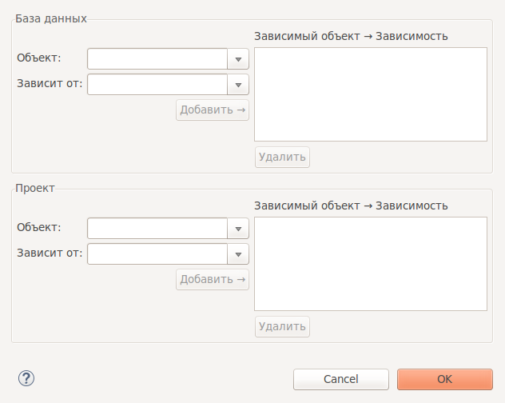

В этом диалоге можно явно задать зависимости между объектами БД. Это может понадобиться, например, в случае если автоматическое распознавание зависимостей не сработает для некоторой сложной зависимости. Добавленные зависимости будут учтены при генерации последовательности выражений скрипта наката.

Окно состоит из двух частей, которые служат для добавления зависимостей к сравниваемым БД.
Для добавления зависимостей между объектами, достаточно ввести начльные буквы из названия объекта и из выпадающего списка выбрать имена зависимых объектов и нажать на кнопку Добавить. Зависимость отобразится в списке добавленных.
Для удаления выделите связку зависимых объектов и нажмите Удалить.